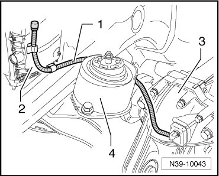

LEMON Manuals
: Even more car manuals for everyone: 1960-2025
Home
>>
Volkswagen
>>
2004
>>
Touareg (7LA) V6-3.2L (BAA)
>>
Repair and Diagnosis
>>
Transmission and Drivetrain
>>
Automatic Transmission/Transaxle
>>
Fluid Line/Hose
>>
Service and Repair
>>
Removal and Replacement
>>
Breather Line Routing
>>
Front Final Drive
Front Final Drive
Breather Line Routing
The breather line -
1
- runs from the front final drive -
3
-, behind the right engine mount -
4
- to the air filter -
2
- and is clipped into it.
